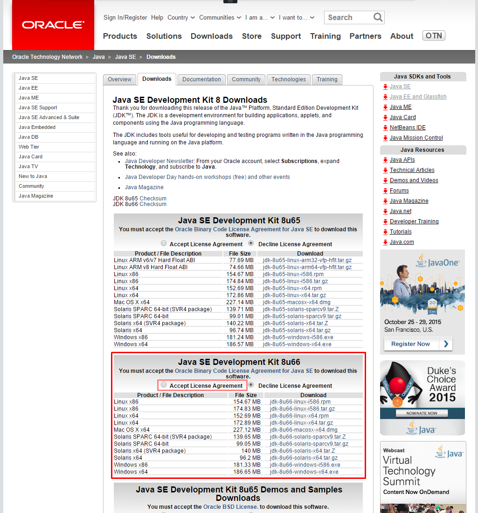

開発環境の構築手順 (Eclipse編)
※ 2015年11月時点の情報です。バージョンや URL など更新・変更されている可能性があります。
Java 8 (JDK)
※ 既にインストール済の場合は、省略可
http://www.oracle.com/technetwork/java/javase/downloads/index.html

最新版をダウンロード。「Accept License Agreement」にチェックを入れて、自分のOSに応じて一つ選択

ダウンロードが完了したら、インストーラを起動
※ Windows の場合、デフォルトのインストール先が Program Files 配下になっているが、パスに空白が含まれるのを避けたほうがよい。推奨は C:\opt\Java\jdk1.8.0_xx\

続いて JRE(Java実行環境)のインストールが始まります。
※ Windows の場合、デフォルトのインストール先が Program Files 配下になっているが、パスに空白が含まれるのを避けたほうがよい。推奨は C:\opt\Java\jre1.8.0_xx\

Java EE 7 SDK (+ Glassfish 4)
Java EE 7 SDK に Glassfish Server も同梱されている
http://www.oracle.com/technetwork/java/javaee/downloads/index.html
Web Profile 版ではなく、通常版(Full Platform版)を選択
次の画面で「Accept License Agreement」にチェックを入れてダウンロード
zip 形式でダウンロードされるので、適当な場所に解凍 (Windows の場合、推奨は C:\opt\Java の下。Program Files など空白が含まれるパスは避ける)
Glassfish 4.1
Eclipse
通常の Eclipse (英語) または日本語化された Pleiades のどちらかをダウンロード。
2015年11月時点で最新バージョンは 4.5.1 Mars。
zip 形式でダウンロードされるので適当な場所へ解凍。(Windows の場合、こだわりが無ければ推奨は C:\opt\ の下)
- Eclipse(英語)
http://www.eclipse.org/downloads/
Eclipse for Java EE Developers をダウンロード (約250MB)
※ Eclipse for Java Develpers ではないので注意 ※ 64bit / 32bit はPC のOSプロセッサに応じて選択。

- Pleiades (日本語化パッケージ)
http://mergedoc.osdn.jp/
Java Full Edition (64bit or 32bit)をダウンロード (約1GB)
※ 64bit / 32bit はPC のOSプロセッサに応じて選択。
Eclipse Plugin Glassfish Tools
- Eclipse を起動する。起動時に入力する workspace は
C:\workspaceが推奨) - メニューバーの
HelpからEclipse マーケットプレースを選択

-
検索欄に
Glassfishと入力し、Glassfish Tools をインストール -
「選択されたフィーチャーの確認」は、必須の Glassfish Tools と、任意で Java EE 7 Documentation を選択
- 規約に同意し、先へ進む
- インストール完了後、Eclipse の再起動を促されるので再起動する
インストール済のJRE の追加
- Eclipse のメニューから「ウィンドウ」>「設定」を開き「Java」>「インストール済のJRE」を開き「追加」ボタン
- JRE Type は Standard VM を選択し「次へ」
- JRE Home の入力欄の右の「Directory...」から インストールした JDK のパスを指定し「完了」
- 追加された JRE(JDK) の行のチェックボックスを ON にし、デフォルトの JRE に指定し「適用」または「OK」
Eclipse サーバランタイム設定の追加 (Glassfish)
- Eclipse のメニューから「ウィンドウ」>「設定」を開き「サーバー」>「ランタイム環境」を開き「追加」ボタン
- 「GlassFish 4」を選択し「新規ローカルサーバを作成」のチェックを入れて「次へ」
- 「新規サーバーランタイム環境」ウィザードで以下ように入力し「次へ」
<Java EE SDK のインストールフォルダ>/glassfish4/glassfish
<インストールしたJDK>
- デフォルト値のまま完了 ※パスワードも不要
プロジェクト作成
- 「ファイル」>「新規」>「動的Webアプリケーション」を選択

- 「新機動的Webプロジェクト」ウィザードが表示されるので、以下の内容を入力し「完了」
Glassfish Server の起動
- 「サーバー」ビューで「GlassFish 4 at localhost [domain1]」を右クリックし「デバッグ」

- ファイアーフォールの警告が出ることがあるが、「アクセスを許可する」で問題ない
- 起動後、Webブラウザで http://localhost:8080 にアクセスし、GlassFish サーバが起動出来ていることを確認